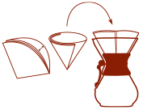
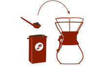
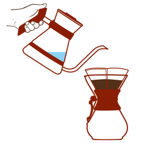
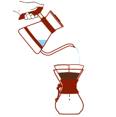
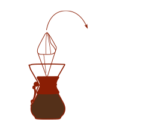

How to Brew the best cup you have every time you have it
Like all good things,full flavor takes time — and your own special touch.
The CHEMEX® Coffeemaker delivers only the elements essential to rich coffee flavor,
so that your personal taste and approach shine through.
Step 1: Get into the grind
Select your favorite whole bean coffee you want to enjoy and grind it to medium coarse ground.
Step 2: Filter up
Open a CHEMEX® Bonded Coffee Filter into a cone shape so that one side of the cone has
three layers, and place it into the top of the CHEMEX® brewer. The thick (three-layer) portion
should cover the pouring spout.
Step 3: The scoop
Put one rounded tablespoon of ground coffee for every 5 oz. cup into the filter cone. Feel free
to use more if you prefer it stronger; our CHEMEX® brewing process eliminates bitterness.
Step 4: Let it bloom
Once you have brought the appropriate amount of water to a boil, remove it from the heat and
allow it to stop boiling vigorously.
Pour a small amount of water over the coffee grounds to wet them, and wait for about 30
seconds for them to “bloom”, releasing the most desirable coffee elements from the grounds.
Step 5: First pour
After the grounds bloom, slowly pour the brewing water over the grounds while keeping the
water level well below the top of the CHEMEX® (quarter inch or more).
Step 6: Brew on
Slowly pour the remaining water over the grounds, using a circular or back-and-forth motion
as you pour to ensure an even soaking of the grounds.
Step 7: Toss the filter
Once the desired amount of coffee is brewed, lift the filter with spent grounds out of
the brewer and discard.
Step 8: Enjoy the perfect cup
Pour your freshly made coffee into your CHEMEX® mug and indulge in the flavor.
Stay warm
In order to keep your coffee warm you may place the CHEMEX® directly on either a
glass stove top or gas flame both at low heat. If you have an electric coil stove top,
you must utilize the CHEMEX® stainless steel wire grid (TKG) in between the
CHEMEX® and the coils to prevent breakage. Be sure that there is a small amount
of liquid in the carafe before placing it on a warm heating element.